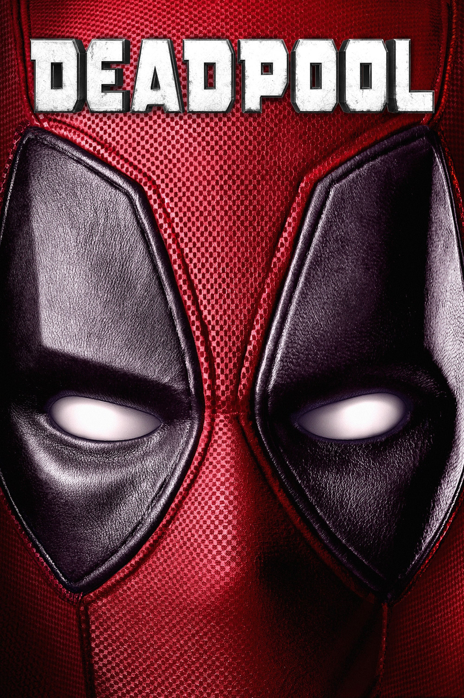

Мировая премьера: 12 февраля 2016
Слоган: Дерзкий, как пуля резкий.
Сюжет: Фильм расказывает историю бывшего спецназовца Уэйда Уилсона, ставшего наёмным убийцей. После того как он был подвергнут чудовищному эксперименту, Уэйд получает способность ускоренного исцеления и берёт себе имя Дэдпул. Вооружённый новой силой и нестандартным чувством юмора, Дэдпул начинает охоту на человека, который почти разрушил его жизнь.
Режиссёр: Тим Миллер
В основе: Комиксы о Дэдпуле (США, выходят с 1991, авторы – Роб Лайфелд и Фабиан Нициезе)
Серия: Люди Икс
В ролях: |
Райан Рейнольдс | Уэйд Уилсон / Дэдпул |
| Морена Баккарин | Ванесса Карлайл | |
| Эд Скрейн | Фрэнсис Фриман / Аякс | |
| Ти Джей Миллер | Джек Хаммер / Хорь | |
| Грег ЛаСалль | Пётр Распутин / Колосс | |
| Лесли Уггэмс | Слепая Ал | |
| Каран Сони | Допиндер | |
| Джина Карано | Ангельская Пыль | |
| Брианна Хилдебранд | Элли Фимистер / Сверхзвуковая Боеголовка | |
| Джед Рис | Рекрутер | |
| Рендал Ридер | Бак | |
| Айзек С. Синглтон мл. | Бут |
Бюджет: $ 58 млн.
Кассовые сборы в США: $ 363 млн.
Кассовые сборы в мире: $ 783 млн.
Продолжительность: 1 ч. 41 мин.
Рейтинг: 8.0